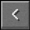

Audio klipid ja Trivia
Siin saab kuulata kõigi Minecrafti muusikaplaate nende täies pikkuses ja lehe lõpus on leitav trivia.
Vali plaat, vajuta selle peale, ja pane see plaadimängijasse!



Pigstep
Relic
Stal
Strad
Cat
Far
Ward
Wait
Blocks
Otherside
Chirp
Mall
Mellohi
5
13
11
Dog


Trivia
- Eksklusiivselt ainult “Legacy Console” versioonides (Xbox 360 ja Playstation 3) on lisatud ekstra lugu otsa plaadile “cat”, mida nimetatakse “dog”. Kui “cat” lõpetab mängimise ja vaibub, hakkab “dog” mängima veel umbes kaheks minutiks, muutes selle “cat”-i versiooni kõige pikemaks muusikaplaadiks mängus.
- Muusikaplaat “wait” istus mängufailides pikka aega enne kui ta mängu lisati. Põhjus oli sellepärast, et plaadi algne nimi oli “where are we now”, mis sisaldas tühikuid oma nime sees, aga mängumootori tehniliste põhjuste pärast ei saanud muusika plaadi nimi sisaldada tühikuid. Niisiis muudeti üks hetk nimi ümber plaadil ja lisati lõpuks mängu.
- “Pigstep” ja “Relic” on ainukesed plaadid mängus, mille nimed algavad suure tähega.
- Muusikaplaadidega saab Minecraftis tekitada punakivi signaale. Selleks peab plaadi sisestama plaadimängijasse ja panema külge punakivi komparaatori. Iga plaat annab erineva punakivi tugevuse. “13” on kõige nõrgema signaaliga (1 plokk) ja “5” kõige tugevama signaaliga (15 plokki), aga “otherside” ja “Relic” on mõlemad sama tugeva signaaliga (14 plokki).
- Kui mängija mängib plaadimängijaga muusikat rohumaa bioomis (Meadows biome) saab ta selle eest saavutuse (Advancement) “Sound of Music”.
- Muusikaplaadi pealkiri “stal” tähendab rootsi keeles varastama ja poola keeles teras.
- “Pigstep” on sulandnimi sõnadest “piglin” ja “dubstep”.
- Pealkiri “13” on viide kolmeteistkümnele koopa helile, mis eksisteerid kui plaat lisati algselt mängu. Need samad hääled on kuulda ka seal plaadil kuni tänase päevani.
- Minecraftis tantsivad muusika saatel papagoid. Kui plaadimängijast mängitakse muusikat, hakkavad papagoid selle läheduses tantsima, liigutades oma pead ja lehvitades oma tiibu.
- Kui muusikaplaadi “11” helifail lasta läbi spektrogrammist, siis on näha helifaili lõpus minecrafti tegelase “Steve” nägu ning numbreid 12418. 12 on siis heksadetsimaalsüsteemis “C” täht, tehes kokku teiste numbritega C418, kes on siis Daniel Rosenfeld.